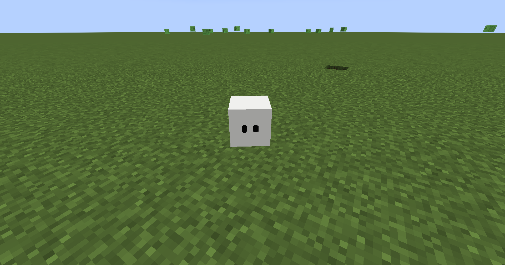
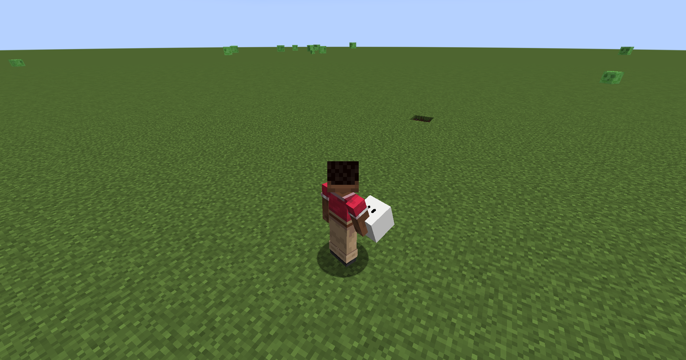
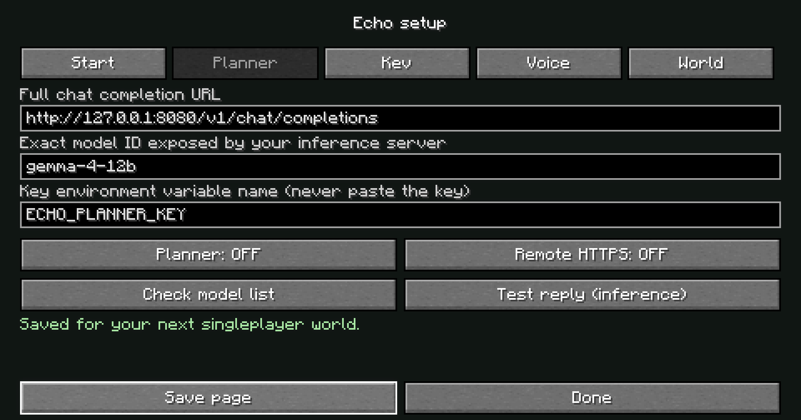
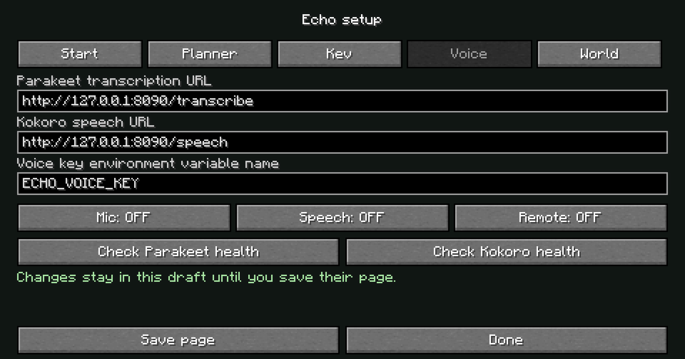

Joins you automatically
Safe nearby ground is checked before arrival. Rejoining restores the same companion; a cube you deliberately picked up stays carried.
Fabric 1.21.1 · Version 0.5.0
Echo joins your world, carries his own inventory, and participates through actual Minecraft mechanics.

Echo is a custom cube entity using vanilla ground navigation. He appears near you on joining, with one identity per player per world.
Safe nearby ground is checked before arrival. Rejoining restores the same companion; a cube you deliberately picked up stays carried.
Mining breaks blocks, crafting consumes ingredients, building places owned materials, and melee defense damages real threats.
Sneak-right-click, or use /echo carry. Place the held cube on safe ground to restore his inventory, health, identity and memory.

The entity is 0.3125 blocks wide and tall. Its original Minecraft model has no humanoid limbs. Blinking, gait, sleep/wake, greeting, curiosity and work poses give it expression.
World memory stores conversations, named locations, discoveries and remaining task steps. Recovered work loads paused, so it does not resume unexpected edits.
While carried, Echo is stored rather than active: chat, speech and gameplay resume after placing him down. The cube is half its previous size. Earlier captures show the original appearance; server tests cover sleep/wake and task transitions. The new hand pose is larger without increasing world size.
New in 0.5.0: safe idle becomes a nap. Movement, interaction and work wake Echo; explicit Stay and Pause still matter.
The hand model is 1.91 times its previous linear size. An 18-degree upward tilt and inward turn aim the eyes toward you in either hand, with the underside hidden in the resting pose.
Transform diagram, not a Minecraft screenshot. Resting geometry is checked mathematically; final live both-hand and swing/equip acceptance remains pending.
After being apart, Echo gives a small hop and wiggle when you settle nearby in Follow mode.
A short tilt and look around during safe idle, also used while a planner reply is pending.
A light nod and bounce while stationary mining, crafting or placing. Active tasks prevent sleep.
Safe idle for 30 seconds → Sleep → Move or interact → Wake → Follow if already enabled
Danger and tasks take priority. Sleep cannot cancel work, enable a denied permission, override Stay/Pause, or change saved ownership. State and phase synchronize through the server.
The mod supplies information to the models. Speech, game sounds and reply audio are three separate paths.
Gemma receives the message, a bounded world snapshot and memory. It returns reply text and an optional plan. The action controller validates permissions and executes real mechanics on the server.
His reply becomes your private audioVoice and speech are off by default. No open microphone or desktop audio capture. Audio paths are implemented but have not been validated with real models or a headset.
Echo hears nearby server sound IDs, positions and ages: for example a zombie, an explosion or a broken block. Default local hearing cap: 32 blocks. It follows Echo’s location, not your headphones.
Optional Kev-4B uses native POST /v1/systemone for bounded threat decisions. Vanilla movement and defensive reactions continue if Kev is unavailable.
Models propose plans; they cannot execute operating system commands or arbitrary Minecraft commands. Permissions, targets, materials and loaded terrain are checked during actions.
Typed messages and voice commands route to your owned companion across distance and dimensions. There is no proximity requirement for conversation.
Start a normal chat message with @echo or use /echo chat. Replies are sent only to you. With Kokoro enabled, the same text becomes a radio-like voice you can hear from afar.
Request recall with /echo here or “Echo, teleport over to me!” The same cube moves to checked safe ground beside you, and its task is paused.
You type@echo what did you hear?
Echo reportsRecent sounds near me: sound IDs, coordinates and ages.
You type@echo teleport over to me
Illustrative command flow, not a captured AI conversation. These hearing and recall controls do not need a model.
Unloaded Echo: one message may wait up to ten seconds for a bounded source-chunk lookup. That is not continuous distant simulation. Gameplay still obeys terrain, dimension and owner-distance checks. The held cube is inactive. TTS is client playback, not positional world audio other players can hear.
Start with deterministic controls. Natural multi-step objectives become available once your planner backend is configured.
/echo hereSafely recall or retry automatic arrival./echo giveTransfer your held stack to Echo within four blocks./echo allow mine trueEnable mining and nearby dropped-item gathering./echo mine minecraft:oak_log 3Find and break three nearby exposed log blocks./echo craft minecraft:oak_planks 3Execute the recipe three times using owned ingredients./echo allow build truePermit bounded construction with owned materials./echo platform minecraft:oak_planks ~2 ~ ~ 3 3Queue a small platform on accessible, valid cells./echo equip minecraft:iron_swordEquip a weapon already in his inventory for defense./echo pause · /echo resume · /echo stopInterrupt, continue or cancel ongoing work./echo senses · /echo status · /echo locateInspect recent sounds, task progress and location.Mining is local and exposed-block only. Construction supports ordinary solid blocks, up to 32 sequential actions. No blueprint importer, recursive recipe solver, autonomous portals or general survival planner. Navigation does not build scaffolds or dig a route.
The mod is usable with its native controls. Enable intelligence and voice separately when your local inference services are ready.
dist/echo-minecraft-0.5.0.jar in the instance’s mods directory. Install on both server and clients for multiplayer.Configuration appears in config/echo-server.json and config/echo-client.json. Use Save page to apply changes. New credential environment values need a process restart.
Server side: Gemma planner uses an OpenAI-compatible chat endpoint. Kev-4B uses its native System One endpoint. Set the actual model aliases your servers expose.
Client side: Parakeet accepts microphone WAV at /transcribe; Kokoro accepts reply text at /speech. Enable microphone and speech independently.
Default backends are loopback only. Remote endpoints need explicit configuration and HTTPS. Credentials come from environment variables. No model weights are bundled or downloaded by the mod.
New in 0.4.0: open Echo setup from the title or pause menu, press F8, or use /echo-setup. Save each page when ready.


Enter the full URL and exact model ID. Check model list first; Test reply verifies the planner JSON contract. Kev uses its native System One endpoint.
Planner, Kev, microphone and speech are separate choices. Health checks do not record audio or run inference. Enable each feature and Save page.
Planner/Kev belong to the server. Voice belongs to your client. Remote server operators use /echo-config; your client cannot change their settings.
Model-list success is not inference proof. Voice readiness is not loaded-weight or headset proof. Explicit inference tests can trigger model loading/downloads in your separately managed service. No weights were downloaded for this update. Put only environment variable names in key fields; restart the process after changing their values.
A build and protocol tests do not prove model quality or real audio behavior. These are separate acceptance checks.
| Area | Evidence | Scope |
|---|---|---|
| Minecraft mechanics | 22 GameTests passed | Real headless server: mining, crafting, placement, following, combat, persistence, carrying, hearing and recall. |
| Java integrations | 29 tests passed | Plan bounds, backend safety, mock Gemma/Kev HTTP, sound budgets and setup diagnostics. |
| Voice service | 6 mocked tests passed | Route, authentication and body contracts. No actual inference or headset proof. |
| Client appearance | Gameplay screenshots | Development client cube and held-item views in a disposable test world. See captions above. |
| Live models and audio | Still unverified | Gemma, Kev, Parakeet, Kokoro, device latency and synthesis quality. No model installation performed. |
| Production multiplayer | Still unverified | Multiple real players, claim-mod compatibility, cold chunks and long-running performance. |
Continue with the technical companion document for source locations, verification records and detailed boundaries. The README contains full configuration examples.
Independent Fabric mod